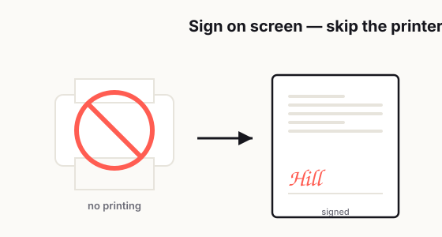

How to Sign a PDF Without Printing Anything
Let's be honest: printing a document just to sign it feels a little ridiculous now.

You get an email. Someone needs your signature. It could be a rental form, a freelance agreement, a school document, an HR paper, or a simple approval sheet. The document is already digital. You're already reading it on a phone, laptop, or tablet. And yet, somehow, the old routine still shows up: print it, find a pen, sign it, scan it, rename it, and send it back.
That whole process is slower than it should be, and most people know it.
The problem is not that digital signing is impossible. The problem is that it still feels oddly confusing for a task that should take less than two minutes. A lot of people hesitate because they're not sure what counts as a valid signature. Should you type your name? Draw it with a mouse? Upload a photo of your signature? Use a formal e-sign tool? And once you do sign it, how do you send it back without looking messy or unprofessional?
If you've ever paused in front of a PDF and thought, "Why is this still harder than it needs to be?" you're definitely not the only one.
The good news is that signing a PDF without printing anything is usually very simple once you understand which method fits which situation. In many everyday cases, you do not need expensive software, and you do not need to turn the process into a mini office project. What you really need is a clean workflow, a readable signature, and enough confidence to know you're not doing something weird.
In this guide, I'll walk through the most common ways people sign PDFs today, the difference between a simple visual signature and a formal e-sign workflow, when each method makes sense, and how to avoid the mistakes that make signed documents look sloppy or create unnecessary back-and-forth.
In twenty years of IT support, often helping 400+ people a day across different time zones and countries, "how do I sign this without a printer?" was one of the questions I answered most — usually from someone with no scanner and a deadline closing in.
— Hill, 20 years in IT supportWhy people still print documents to sign them
A lot of people still print PDFs because paper feels familiar.
That's really the core of it. When a physical page is in front of you, the rules feel obvious. You sign on the line, scan it, and send it back. It may be annoying, but it's familiar annoying. Digital signing, on the other hand, often feels like there are hidden rules nobody fully explained.
Some people worry that typing a name is "not official enough." Others worry that drawing a signature with a mouse will look childish. Some are afraid of changing the document format by accident. And plenty of people have had at least one experience where a signed file came back looking stretched, blurry, cut off, or totally misplaced.
So they fall back on paper, not because it's better, but because it feels safer.
The irony is that printing often creates more problems. You lose time. You reduce image quality when rescanning. You may forget pages. The file size may get bigger. And if you're not near a printer, the whole task gets delayed for no good reason.
For a modern workflow, especially if you work remotely, send contracts, manage forms, or approve documents regularly, learning how to sign a PDF digitally is one of those tiny skills that saves way more friction than people expect.
A simple signature vs. a formal e-sign workflow
This is where a lot of confusion begins.
Not every signed PDF is doing the same job.
Sometimes, all you need is a basic visual signature. That means you place something that represents your signature onto the PDF. It might be a drawn signature, a typed signature styled like handwriting, or an uploaded image of your signature. This works well for simple internal approvals, informal agreements, acknowledgment forms, school paperwork, or documents where the other side mainly needs confirmation that you reviewed and accepted the content.
Then there's the more formal e-sign workflow.
This usually involves an electronic signature platform that tracks the signing process more carefully. It may record timestamps, signer identity steps, email trails, IP-related logs, or completion records. It also tends to control where each person signs and in what order. This kind of workflow is more common when the document matters a lot financially, legally, or operationally, or when multiple people need to sign in sequence.
In plain English, here's the difference: a simple signature helps you sign the document, while a formal e-sign workflow helps prove how the signing happened.
That distinction matters because a lot of people overcomplicate simple tasks and under-prepare for important ones. If you're signing a permission slip or a basic approval PDF, you probably do not need a heavy process. But if you're handling contracts, clients, vendors, or sensitive business documents, a structured e-sign process often makes more sense.
The smartest move is not choosing the "most advanced" option every time. It's choosing the right level of process for the document in front of you.
The most common ways people sign PDFs today
Most people use one of four methods.
The first is typing a name into a signature field. This is the easiest option and often the fastest. Some tools convert the typed name into a handwriting-style font, which makes it look more like a traditional signature. It's convenient, clean, and good for low-friction tasks.
The second is drawing a signature using a mouse, trackpad, stylus, or touchscreen. This feels more personal because it resembles how you sign on paper. On a phone or tablet, it can look pretty decent. On a laptop trackpad, it can look like you signed during an earthquake. Still, for many casual document needs, it gets the job done.
The third is uploading an image of your signature. Some people sign on white paper once, take a clear photo, remove the background, and reuse that image when needed. This can look more polished than a mouse-drawn signature, especially if you use documents regularly. The downside is that if the image is too large, low resolution, or badly cropped, it can make the whole PDF look amateur.
The fourth is using a dedicated e-sign platform. This is the most structured option. It usually guides you step by step, places signatures neatly, and handles multi-party signing better than a basic PDF editor.
There is no single perfect method for everyone. The right choice depends on how often you sign documents, what kind of documents they are, and how professional the final result needs to look.
If you sign documents once in a while, typing or drawing is usually enough. If you sign things every week, building a cleaner repeatable setup will save you a lot of time.
When a simple signature is enough
This part matters because not every PDF deserves a full-blown signing ceremony.
A simple signature is often enough when the document is low-risk, straightforward, and mainly used to confirm acknowledgment or agreement. Think of routine HR forms, internal approvals, basic freelance confirmations, school forms, onboarding documents, or landlord paperwork that does not require a more structured signing workflow.
In these cases, what people really want is speed, clarity, and a file that comes back completed.
You do not need to make a normal task feel like a corporate compliance event. In fact, overcomplicating the process can slow everything down and create more drop-off. People are much more likely to finish and return a document when the workflow is obvious.
That said, "simple" should not mean careless.
Even if you're just adding a visual signature, the document should still look readable, complete, and professionally returned. A clean signature in the right place, with the correct filename and a polite return email, goes a long way. A lazy-looking process can make people second-guess whether you reviewed the document carefully, even when the content itself is fine.
So yes, a simple signature is often enough. Just don't confuse simple with sloppy.
How to avoid ugly, blurry, or misplaced signatures
This is the part people usually learn the hard way.
A signed PDF can technically be complete and still look bad enough to create doubt. That might sound minor, but presentation matters. If the signature is giant, blurry, tilted, floating in the wrong area, or covering text, it can make the document feel less trustworthy.
The first rule is size control. Your signature should fit the signature line or space naturally. It should not dominate the page. One of the most common mistakes is inserting a signature image at its original size and shrinking it badly after the fact. That often creates awkward proportions or fuzzy edges.
The second rule is image quality. If you use a saved signature image, make sure it is clear, tightly cropped, and has good contrast. A signature photo with shadows, wrinkled paper, yellow lighting, or a messy background instantly looks unprofessional. A clean transparent PNG usually works better than a random phone photo dropped straight into the document.
The third rule is placement. Place the signature exactly where it belongs. Not slightly above. Not covering the date line. Not drifting into the margin. Not sitting half on top of other text. People notice those details more than you think.
The fourth rule is consistency. If the PDF also requires initials, dates, checkboxes, or multiple signature fields, keep everything visually aligned. A document looks much better when each field appears intentionally completed rather than patched together in a rush.
The fifth rule is preview before sending. Always open the final signed PDF after saving it. Don't assume it looks the same as it did during editing. Sometimes a viewer displays a signature one way, but the saved file looks different later. That final check takes maybe fifteen seconds and can prevent a surprising amount of embarrassment.
How to sign and send a PDF back professionally
A lot of people focus only on the signature itself and forget the return process.
But honestly, how you send the document back is part of the professional impression too.
Start by saving the completed file with a clear filename. Something like:
- Agreement-Signed-John-Smith.pdf
- Lease-Form-Signed.pdf
- Vendor-Approval-Completed.pdf
That is much better than:
- scan123.pdf
- finalfinal2.pdf
- document-new-new.pdf
A clean filename makes life easier for the person receiving it, and it signals that you're organized.
Next, double-check that the document is actually complete. This sounds obvious, but it's surprisingly common to sign one page and forget that a second page also required a date, initials, or a checkbox.
Then send a short, normal email. You do not need to overdo it. Something simple works well:
Hi [Name],
Attached is the signed PDF. Let me know if you need anything else.
Best,
[Your Name]
That's enough. Clean, direct, professional.
If the document is time-sensitive, mention that clearly in the message. If there are multiple attached files, label them in the email body so the recipient knows what they're looking at. If a platform asks you to upload the signed PDF rather than email it back, confirm that the uploaded version opens correctly before closing the tab.
Professionalism in document handling is often just a bunch of tiny boring details done well. But those details reduce delays, prevent confusion, and make people more comfortable working with you.
Common mistakes that cause trust issues or delays
Most signed PDF problems are not dramatic. They're just irritating enough to slow everything down.
One common mistake is using the wrong signing method for the situation. A casual visual signature might be fine for one document and completely inappropriate for another. When the workflow needs stronger documentation, trying to shortcut it can create questions later.
Another mistake is sending back the wrong file version. Maybe you signed an older draft, or maybe you exported the PDF before the signature was actually embedded. This happens more often than people admit.
A third mistake is low-quality signature images. If your signature looks like a cropped screenshot from 2017, people notice. It may not invalidate the document, but it can reduce confidence.
Another issue is forgetting supporting fields. Sometimes the signature is there, but the printed name, title, date, or initials are missing. That creates unnecessary follow-up and makes a two-minute task turn into another email thread.
People also get into trouble by editing too much. If all you need to do is sign, don't accidentally alter the document layout, font spacing, or page order. A signed PDF should still look like the original document, just completed.
And finally, one of the biggest mistakes is not reviewing the final file. Many delays happen because someone assumes the document saved properly, sends it, and only later finds out the signature did not appear, the file won't open, or the pages exported incorrectly.
None of these problems are rare. But the good part is that nearly all of them are preventable with a simple checklist and thirty extra seconds of review.
A practical workflow that keeps things easy
If you want the process to feel painless every time, keep it simple.
Open the PDF in a tool that supports signatures. Review the document fully before signing anything. Add your signature using the method that fits the situation. Fill in any dates, initials, or extra fields. Save a final signed copy with a clear filename. Reopen it once to confirm the signature is visible and placed correctly. Then send it back with a short professional message.
That's really it.
If you sign documents regularly, it helps to prepare a reusable signature image and a standard file naming style. That tiny bit of setup removes friction the next ten times you need it. You do not need a complicated system. You just need a method that is fast, readable, and repeatable.
The best PDF signing workflow is not the fanciest one. It's the one that lets you finish the task quickly without making the document look messy or creating extra questions for the other person.
Final thought
Signing a PDF without printing anything should feel normal by now, and in most cases, it is.
Once you understand the difference between a simple visual signature and a formal e-sign workflow, the process gets much less intimidating. For everyday documents, a clean digital signature is usually all you need. The key is making sure it looks intentional, readable, and professional.
Because at the end of the day, nobody wants a signature process to become a project.
They just want to sign the document, send it back, and move on with their life.
Related reading: To add more than a signature, see how to edit a PDF without paying for expensive software; if a form won't let you type, read why your PDF form won't work and how to fix it.
Frequently asked
Can I sign a PDF without printing it?
Yes. You can sign a PDF digitally by typing your name, drawing your signature, uploading an image of your signature, or using an electronic signature platform.
What is the easiest way to sign a PDF?
The easiest way is usually to open the PDF in a tool that supports signatures and either type or draw your signature directly into the signature field.
Is typing my name on a PDF considered a signature?
In many everyday situations, typing your name can be accepted as a signature. However, the required method depends on the document type and the organization requesting it.
What is the difference between a simple PDF signature and an e-signature workflow?
A simple PDF signature is a visual mark added to the document, while a formal e-signature workflow may include identity steps, timestamps, and audit records to better document the signing process.
How do I make my PDF signature look professional?
Keep the signature clear, properly sized, and placed exactly on the signature line. Use a clean image or a neat drawn signature, and always preview the saved PDF before sending it.
How should I send a signed PDF back?
Save the file with a clear name such as Agreement-Signed.pdf, confirm all required fields are completed, and return it with a short professional email or upload it through the requested platform.